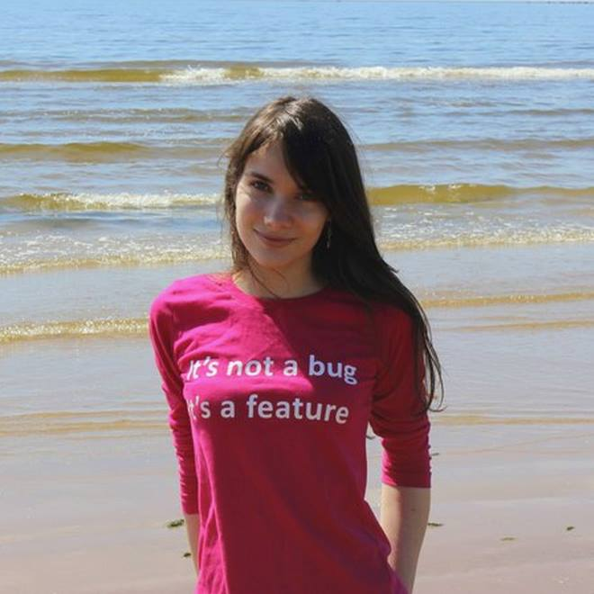
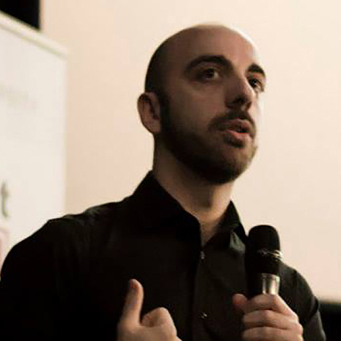
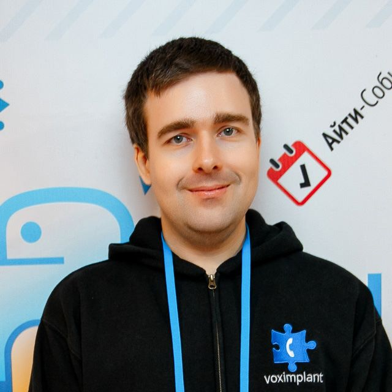

AmsterdamJs
The largest and longest-running JavaScript community in town
Apart from friendly evening meetups, starting from 2017 we kick-off an annual JavaScript Conference in the heart of The Netherlands, with the first edition coming on 8th of June!
First dedicated JavaScript conference in Amsterdam
Taking our biggest and longest-running JavaScript community forward, we're adding a new event to our
family - a full-day conference covering the latest and greatest news and insights from the
global JavaScript network.
Join us and a group of internationally known JavaScript enthusiasts to share inspiration and spend a
great, summer day in one of the most unique Amsterdam locations.
Plantage Middenlaan 45
1018 DC Amsterdam
The Netherlands
Speakers
-

Christian Heilmann
Microsoft, London
Chris Heilmann has dedicated a lot of his time making the web better. He wrote two and contributed to eight books on web development and wrote many articles and hundreds of blog posts for Ajaxian, Smashing Magazine, Yahoo, Mozilla, ScriptJunkie and many more.
Currently working with the Microsoft Edge team as a Program Manager for Developer Outreach. -

Michael Stanton
Google, Munich
Software Engineer and Manager on the V8 Javascript Execution Optimization team. I love the details of VM implementation, as long as I can relax with a scary mountain climb now and then.
-

Simona Cotin
Arista Networks, Dublin
Simona is an enthusiastic full stack developer building rich data visualization for network data. Communities power her up and that's why she is co-organising the AngularJS meetup in Dublin. Passionate about knowledge sharing, she has also worked on workshops for Women Who Code in Dublin and NgGirls in Copenhagen encouraging women to learn about programming.
-

Dustin Whittle
Uber, San Francisco
Dustin Whittle is a Developer Advocate at Uber where he spends his days helping developers build moving experiences using the Uber developer platform. Find out more at dustinwhittle.com.
-

Denis Radin
Werkspot, Amsterdam
Passionate about performance optimization, mastering workshop, hosting React Amsterdam. Launching JavaScript into space and stratosphere in spare time and believe this is a sunrise of interactive revolution. Blogging at PixelsCommander.com, and tweeting at @PixelsCommander.
-

Ahmed El Gabri
Lightspeed, Amsterdam
Senior front-end developer at Lightspeed, mainly focusing on front-end architecture & modular design systems.
-

Daijirō Wachi
CoolGames, Amsterdam
A Node.js Core Collaborator in The Netherlands. Walking with ECMA-402, @urlstandard, @electronjs and @nodefest.
-
Ádám Sándor
Container Solutions, Amsterdam
Adam moved from application development to a consultancy career in cloud native computing. He currently works at Amsterdam-based consultancy Container Solutions. He is helping companies succeed in improving their delivery of business critical software by combining his application development experience with knowledge of container-based infrastructure.
-
Hernán Magrini
Udacity, Berlin
Originally from Argentina, self-taught developer after doing a B.S. in Electronic Engineering. I co-founded and led the local Google Developers Group over 6 years ago, where I presented at multiple conferences focused in Web Applications and Performance. I've been working at Udacity for over a year leading our software development for the European branch, mainly focused in usability and performance, as well as shipping new features here and there.
-

Sam Bellen
madewithlove, Hasselt
I’m a front-end software engineer from Belgium with a special interest for the the web-audio-api and other exotic browser API’s.
-

Vasilika Klimova
Artec3D, Moscow
I started with the web page's markup, then I worked as full-stack developer on PHP / JavaScript. The last 4 years I have been engaged only in interfaces and tasks related to 3D.
I am one of the organizers of the MoscowJS community, the speaker of various Russian conferences and I teach courses on the basics of markup and JavaScript programming. -

Slobodan Stojanovic
Cloud Horizon, Belgrade
Programmer and entrepreneur from Belgrade, Serbia. For past 5 years worked as a CTO and a partner at Cloud Horizon, small Canadian-Serbian company that builds a web apps for a lot of interesting startups mostly from North America. Also an organizer of JS Belgrade meetups.
Loves JavaScript and open source, especially playing with offline webapps, chatbots, serverless architectures and new things available in both browser and NodeJS. -

Ivano Malavolta
Vrije Universiteit Amsterdam, Amsterdam
Assistant professor in the Software and Services group of the Vrije Universiteit Amsterdam (The Netherlands). His research is positioned in the following research fields: empirical software engineering, software architecture, mobile software, robotics. Since more than 5 years he is teaching courses on data-driven software engineering and mobile applications development via web technologies.
Ivano is a strong advocate of applying academic research results in real scenarios, and he is working on projects that have been awarded as the most innovative solutions in both national and international venues. -
Roman Melnyk
Liberty Global (Ziggo), Gelgrop
Since being teenager I'm into programming. Now I'm doing it on professional basis for more than five years. I love web and I'm passionate to make it pretty, useful and convenient.
-
Johan Gorter
AFAS, Leusden
Frontend software architect at AFAS, enthusiastic about the possibilities of web technology, fan of Typescript and Virtual DOM, creator of maquettejs.
-
Ingrid Epure
Intercom, Dublin
Ingrid is an engineer currently working for Intercom in Dublin, Ireland. She has been coding for more than 12 years and discovered her passion for distributed systems and infrastructure 3 years ago. She is a conference speaker, an active member in the Python community and loves mentoring and helping with community-driven events.
-

Yoshua Wuyts
Dat Project, Berlin
Computer dad @dat_project.
-
Bart Jansen
Microsoft, Amsterdam
Technical Enthusiast and fan of JavaScript ever since script.aculo.us came out. Technical Evangelist at Microsoft & M.Sc. Electrical Engineer from Delft University of Technology.
-

Albert Brand
Xebia, Utrecht
Proud husband and dad. Pragmatic programmer. Xebia senior consultant. Scrum master.
-

Grigory Petrov
Voximplant, Moscow
Full-time software developer since the late nineties. Was involved in such software projects as Radmin, Advanced IP Scanner, NPTV. Frequent conference and meetup speaker with main areas of interest in software development management and cross-platform development. Works full-time as a technology evangelist at Voximplant, javascript-driven cloud telephony and video platform.
Talks
-
Christian HeilmannMicrosoft
JavaScript is a buffet, not the enemy
When you look at the JavaScript world these days you can get disheartened. On the one side there is an overwhelming offer of things you should know but are "considered harmful" by the time you have a chance to look at them. On the other side you have fire and brimstone talks about how relying on JavaScript makes you a terrible person. Let Chris set your mind at ease. Things aren't that grim or complicated.
-
Michael StantonGoogle
V8 and How It Listens to You
The JavaScript language gets ever more powerful, but more complex to implement and deliver good performance. V8 has a new compiler pipeline and a unified approach to collecting feedback about your application. I’ll explain how we do it and present some problems. For example, in complex systems, facile "solutions" often distort the environment in unexpected ways. Welcome to the jungle *__*.
-
Simona CotinArista Networks
RxJS all things
Managing state in large application applications is hard. Managing async behavior is even harder. Let's talk about why reactive programming is awesome and how it can help with managing complexity, data and scaling your applications. Also, remember the callback hell?! Well, we once have been PROMISED that all will be good. And guess what, we OBSERVED we can do better. Let's deep dive into how observables are much better than promises.
-
Dustin WhittleUber
Javascript @ Uber
Join this session for a deep dive on how Uber leverages javascript across its engineering orgs. From building frontend properties with a full javascript stack using express and react to the tools and infrastructure we use to automate best practices.
-
Denis RadinWerkspot
A Journey From Web to VR
Virtual Reality is a powerful trend which is not that related to front-end development so far, however it would be beneficial for both technologies to have a possibility to put existing Web applications into virtual worlds. Talk is about approaches you might take to drop your existing Web app into VR in order to provide new experiences for customers and get some fun for yourself
-
Ahmed El GabriLightspeed
Automating front-end refactoring
Refactoring or changing an API of a lib you maintain might not be a fun task. But sometimes it is required. If you are going to do it anyway, you don't want to do this manually anyway. So with the power of ASTs & codemods you can automate this & have confidence in the result
-
Daijirō WachiCoolGames
Doctor Wombat
In the global OSS community, it often takes a time to solve users' problems, due to the differences of the time, language, environment and something the other things. The important thing in order not to waste time is to reduce the number of conversational balls at the issue thread. Daijiro will explain what we can do for them by referring to localization communities, tools, and npm doctor.
-
Ádám SándorContainer Solutions
Why you should care about Docker
Creating a stable and reproducible development environment can be a hassle. The more components you have the less feasible it becomes to run them all together on your laptop. Using Vagrant helps with reproducibility and isolation but putting all components on a single VM is very different from the way they will run in production. Docker comes to the rescue with lightweight containers that isolate each application component with minimal overhead.
-
Hernán MagriniUdacity
The Road to Web Performance in 3 Critical Steps
Assuming everyone uses the web with a 10 Mbps connection and a Macbook Pro it's rather utopian. At Udacity we have a daily traffic of millions of page views from people all around the globe and we always aim to serve the best experience possible even if you're browsing the sites with an old Android with a 3G connection. We'll see what critical steps we follow to make sure we are making our sites as fast as possible.
-
Sam Bellenmadewithlove
Changing live audio with the web-audio-api.
As a guitar player, I usually use some effect-pedals to change the sound of my guitar. I started wondering: “What if, it would be possible to recreate these pedals using the web-audio-api?”
-
Vasilika KlimovaArtec3D
WebGL Practical application
WebGL it's not so scary and difficult as many people think. Let`s have a quick tour over WebGL nature and ecosystem.
-
Slobodan StojanovicCloud Horizon
The Hitchhiker's Guide to the Serverless Galaxy
What is Serverless, how it works and why are people talking about it? How many servers are there in Serverless computing? But most important of all, how and why Serverless can be important for you?
Don’t panic! This talk will take you to the journey through the Serverless Galaxy with Node.js. -
Ivano MalavoltaVrije Universiteit Amsterdam
Are service workers draining my battery?
Mobile web apps represent a large share of the Internet today. However, they still lag behind native apps in terms of user experience. Progressive Web Apps (PWAs) are a new technology introduced by Google that aims at bridging this gap, with a set of APIs known as service workers at its core. In this talk Ivano presents an empirical study that evaluates the impact of service workers on the energy efficiency of PWAs, when operating in different network conditions on two different generations of mobile devices. This talk presents the results of the first empirical investigation on PWAs, showing that the PWA and service workers technology is promising in terms of energy efficiency.
-
Roman MelnykLiberty Global (Ziggo)
Taming the async flow
The asynchronousity is inevitable. Managing async things might be messy as we don’t know neither when nor even whether the async action takes place.There are a lot of techniques for handling asyncronousity. Let’s align them and point out the main principles of designing the async data flow. Respecting these principles won’t make you spend weekends debugging.
-
Johan GorterAFAS
Benefits of Virtual DOM
Virtual DOM is generally considered to give the best performance for web applications. How can this be given it is such an inefficient algorithm? I will give an overview of popular Virtual DOM implementations and I will introduce our Virtual DOM library, MaquetteJS. I will also show how Virtual DOM makes unit testing easy. I will demonstrate how we achieve 100% code coverage on all our visual components using fast-running NodeJS unit tests.
-
Ingrid EpureIntercom
The art of keeping your application safe
Let's talk about security. We can all agree it is very important, however the general feeling about it is that it's a difficult and intimidating area to approach. Furthermore, is very often seen as something only backend-related, however front-end plays an important role as well.
-
Yoshua WuytsDat Project
Browser Framework Fundamentals
Ok, let's try a thing. Close your eyes for a bit. No peeking. Now I want you to imagine the last time you wrote some browser code. Perhaps a component of sorts. Remember what that was like? yeah. Ok. Now I want you to imagine that was the very last time you had to write that component. New framework in town? No problem, still works. Wouldn't that be nice?
-
Bart JansenMicrosoft
Using Custom Vision API to make your own vision intelligence application
Not a Data Scientist, still a JavaScript enthusiast? You are in luck: I’ll be demoing a web application built on top of Microsoft’s new Custom Vision API. It allows you to train your images either programmatically or via a GUI, and with those REST endpoints you can easily add Artificial Intelligence to your (web) application.
-
Albert BrandXebia
WebAssembly - the final frontier
The new kid on the block in browser land is WebAssembly. It allows precompiled code to run at native speed, connected via JavaScript to your browser. But how does it work? What are the (dis)advantages? Can we optimise our SPA with it? With many examples, I will talk you through the setup, pitfalls and rough edges.
-
Grigory PetrovVoximplant
Porting Web SDK from JS into TS
Typescript was warmly welcomed with all our developers from C++, Java and C# background. So it was only a question of time for our public JavaScript SDK to be completely rewritten in Typescript from scratch. In my talk I will focus on good and bad things that we experienced during development, and will tell how our initial thoughts played out.